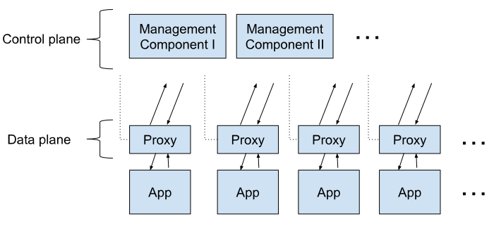
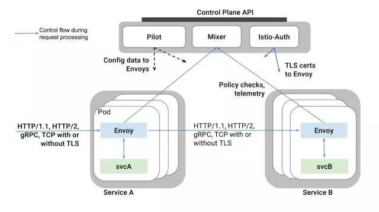
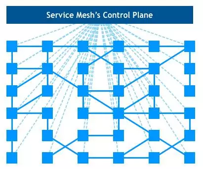
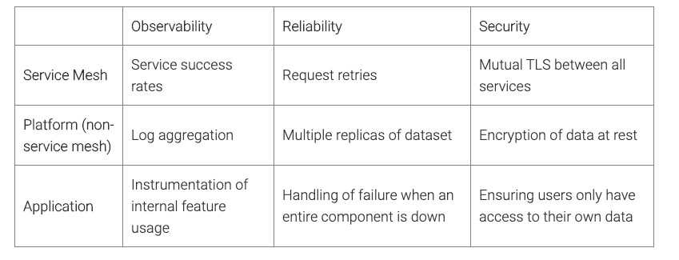
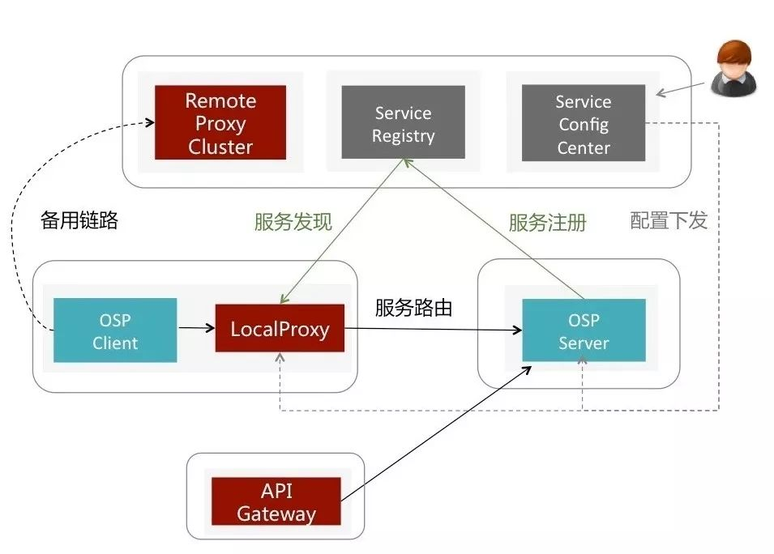
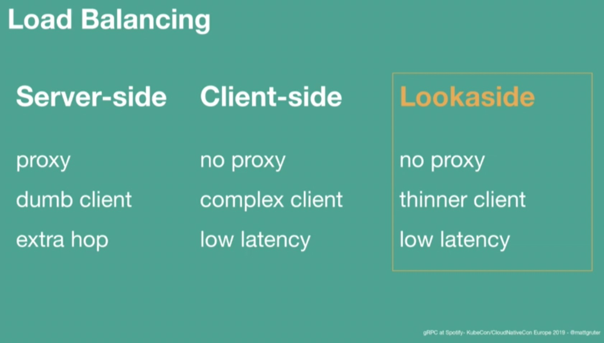
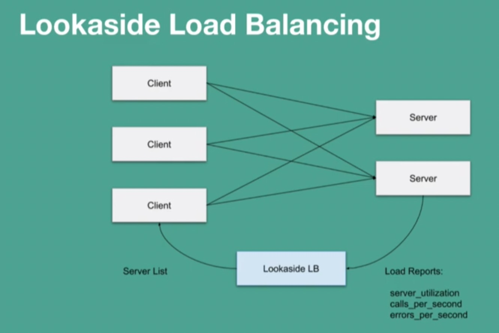
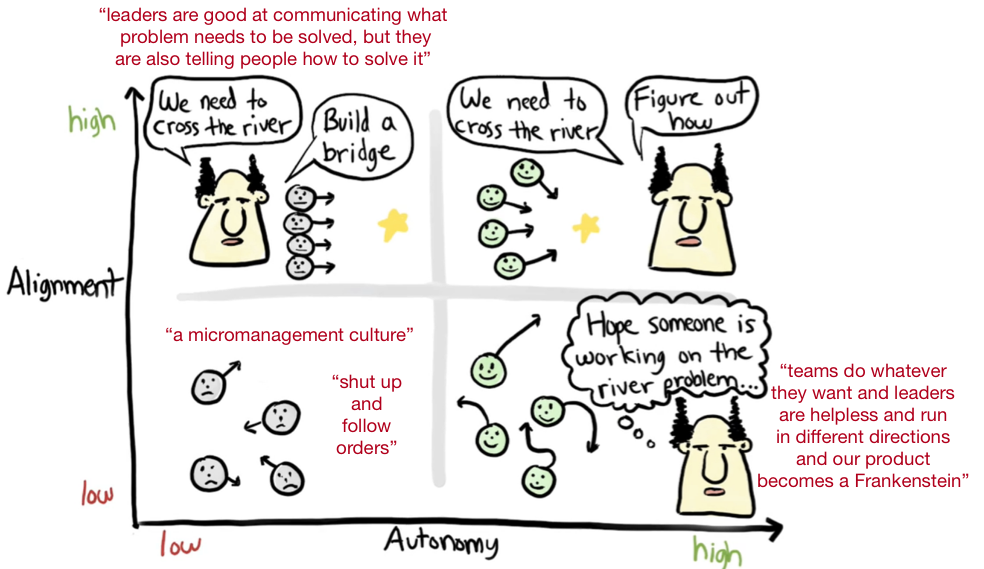
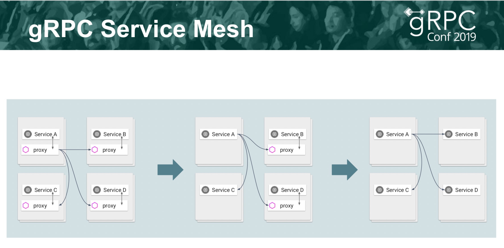
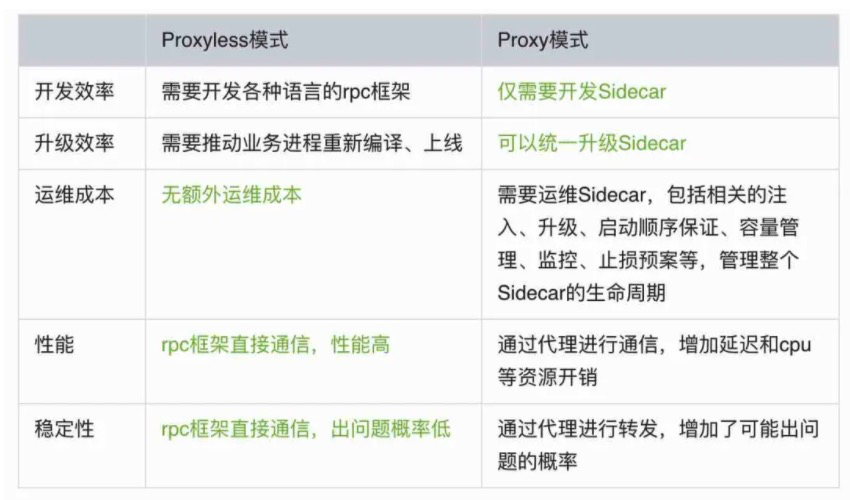

written by Alex Stocks on 2019/05/21，版权所有，无授权不得转载
愚人曾对 Service Mesh 有成见：以为其不过是一些西方商业公司的 “概念党” 们基于利益包装出来的又一个所谓的 “新概念”，然后国内一帮 “布道师” 们便开始锣鼓喧天地抬轿子迎进来。
基于这种认知愚人去年一年躲开了一些机会，但 "躲得了初一躲不过十五"，今年刚进公司第一天，便被同事告知工作内容之一便是某系统的 Service Mesh 改造工作......
考虑到饭碗，愚人还是很愉快无节操地拥抱项目开干了。随着工作展开逐步了解 Service Mesh 的内容之后，对这项技术有了兴趣，进而有了自己的一些看法。
以前个人有愚见，Service Mesh 概念其实不过是新瓶装老酒。大概 2012 年时，愚人在 “南方某厂” 干活时，曾见过一个称之为 nlb 的客户端代理系统，其核心组件 proxy 工作职责有：
后来这套系统被移植到其云系统之上时，被改名为 F5。当看到后来的 Service Mesh 概念时，便有种孩子出生六年了还是个 nobody，到六岁上小学时才被匆匆命名之觉。
当然以上为个人愚见，按照正史记载：2016 年 9 月 Service Mesh 概念之所以出现且存在是为了减轻网络中心控制节点的压力。
以 2015 年出现的 k8s 的为例，其每个 Worker Node 需要同 Master Node 之间通信以上报容器状态并接收控制信息，Master Node 便成为整个系统的单点。有了单点，上帝需要对其拆分，于是便有了 Istio。愚人以为 Istio 其实也不过是从十年发展历史的 envoy 某些概念的拆分组合后形成的。
淡然，本文无意向深处阐述 k8s 的各种概念【那是因为目前我还没入门^_^】，只能从一些虚处入手，结合个人以往的粗浅项目经验来谈谈自己的 Service Mesh 愚见。
Istio 要求每个容器有自己的代理（Sidecar），所有 Sidecar 直接进行数据通信【数据平面】而后组成一个服务网格（Service Mesh），从 Istio 接收配置信息且进行服务发现并进行状态上报【控制平面】。如下图，参考文献4 给出了一副 service mesh 定义图。

Sidecar 接管容器应用的所有网络流，负责流量管理（服务发现、服务治理、流量控制）、安全管理、健康检查和监控上报。某容器出现故障便会被系统网络隔离，而后会被新容器替换之，并不影响整体网络健康度。整体网络弹性可伸缩，且流量会被精细调度，系统整体不存在单点。
Istio 官方给出了如下一个基于 Envoy 作为 Sidecar 的 "经典" Servidce Mesh 宏观视图：

整体框架图甚是精简，若把其嵌入 k8s，便有如下让密集恐惧症患者们肃（望）然（而）起（生）敬（畏）的围棋图：

愚人初学 k8s 已经被其各种名词吓倒，再加上 istio 的各种 “新概念”，心中只有跪拜的想法。虽如是，二者的功能都是搭建一个健康的 “数据管道”，其本质必脱离不了 “流量管控”。
经典框架中描述了 Service Mesh 由 控制平面 和 数据平面 构成。参考文献4 给出了 service mesh 的三大优点：
在 参考文献4 文中，service owner 和 platform owner 可以通过 service mesh 减少大量的沟通成本。这也许是 service mesh 最大的优点了。

基本上只靠 service mesh 不可能完全保证服务的可靠性、可观察性与安全性，需要这三个层面通力合作保证。
如下，参考文献4 给出了一副 Service Mesh 控制面板的架构定义图。
从上面内容可见，控制平面主要完成服务发现、服务注册、安全认证和通过监控指标收集使得系统可观察。
应用无论是否运行在 Service Mesh 系统之中，都有需要升级之时，即使 Service Mesh 数据平面系统自身也面临升级问题。Service Mesh 系统升级，核心便是众多 Sidecar 的升级，最高要求就是做到 Sidecar 升级时，其服务的应用系统无感【高大上说法是 “在飞驰的火车（鹅厂用词）/飞机（猫厂用词）上换引擎”】。
个人曾见到这样的说法：基于 Istio 的 Service Mesh 系统的 Sidecar 如果能做到热升级，其升级便能做到 “丝滑般柔顺”。但个人在基于某 sidecar 进行定制开发时，从一起干活的同事的开发经历中见到的真实情况是：为了做到对应用系统无感，sidecar 热升级【如蝉蜕变】花费 30s，给其定义了若干状态，然后形成一个巨复杂的状态机等待业务方去填充业务逻辑，且整个过程某些子服务的网络流还是会暂停的！
当然，身为高段位的我厂同事处理这种流程还是手到擒来，最后很 ease 地把整个流程搞定了，但最终的结果是业务流程也配合做了改变。事后反思整个流程，个人的看法是：既然现实中做不到热升级过程中的 “丝滑般柔顺” 和 “应用层无感”，为何不通过服务降级这种方式简化处理流程呢？
升级的最终结果只要做到应用层服务流程不中断即可，不必强调 “应用层无感知”。换一种认知便是换一种处理方法，通过服务降级，虽然整个流程让应用层也分担整个过程的复杂度，但也降低的 Sidecar 自身处理整个升级流程的复杂度【复杂性守恒定律】，且应用层的流程处理完全可以经梳理后形成标准，在应用层的网络 SDK 层内处理整个升级流程，最终的结果其实能做到 “应用开发者无感知”。

如上图【源自参考文档1】中给出了唯品会公司的 Service Mesh 框架以 服务降级 手法处理 Service Mesh 框架升级流程：“如果本地Proxy不可用或宣称自己准备关闭，就将请求无损转发到Remote Proxy，再启动一个监视器观察本地Proxy什么时候重新可用"【源自参考文档1】。
其核心在于其 “Remote Proxy Cluster”，解决手法简单漂亮，整个升级过程中没有 “热升级” 处理流程中需要旧版本 Sidecar 容器和新版本 Sidecar 容器共存而引起的额外资源占用问题。
Sidecar 作为网络层组件接管了其服务应用的流量后，服务应用层以 local 方式连接 Sidecar，可以实现自身网络层处理与负载均衡、网络路由、网络分流、限流以及熔断等服务治理工作的解耦。服务治理中最重要的工作内容之一即 Load Balancing，就这方面的工作而言，Sidecar 其本质可认作是一种 Service-side 方式的 Proxy。
参考文献4 要求 sidecar 满足下面三个条件：
就服务治理而言，其工作可以放在 Server 端，亦可放在 Client 端，或者独立成一个单独的控制平面组件。

上图【源自参考文档2】对三种形态的负载均衡处理方式进行了对比。
服务端形式的负载均衡是通过服务端代理层实现的，对服务端而言，其是一个 "dumb client"。目前很多常见的系统都是通过这一形式实现负载均衡功能，如 Pulsar 系统的 Broker、Codis 中的 Proxy 以及某以前实现的一个即时通信系统中的 Proxy/Relay/Router 等。
Server-side Proxy 优点是对客户端屏蔽的服务端的复杂性。中间件服务系统的客户端使用数据量是服务系统自身无法控制的，客户端伸缩性极强，而 Proxy 是服务端系统的一部分，其可伸缩性远不如客户端层频繁，如果系统内部需要进行数据负载均衡，则在 Proxy 层面对客户端的读写流量进行控制即可。
其缺点也很明显：在 client 和 server 之间多了两次 "extra hop"，一个经验值是：一个好的 Proxy 会使得 client-server 之间的网络吞吐量仅降低到原来的八成。
与 Service-side 形式的 Load Balancer，二者优缺点正好相反。Client-side 形式的 Load Balancer 等服务治理功能放在 Client SDK 中，最终造就一个 “胖客户端”。
某 2016 年在上海时，曾搭建了一套 Client-side 形式的 Redis 缓存服务，其各个组件以及功用如下：
Redis Instance
每个 Instance 即是一个数据分片，由 Master/Slave 构成，二者之间通过异步方式进行数据同步，不能保证数据严格一致性【缓存服务可容忍】；
Redis Pool
Redis 数据分片池，可伸缩。
Redis Sentinel Cluster
由 Redis Sentinel 构成了 Redis Pool 集群监控组件，实现：
Redis Dashboard
通过 Sentinel 群集获取 Pool metadata，进而获取各个 Instance 分片运行情况的展示。
Redis Client SDK
通过改造 Jedis，向 Redis Sentinel 群集即时获取【客户端主动拉取】 Redis Pool 的 metadata，并实时获取【服务端推送】 Redis Pool 的最新 metadata。基于这些 metadata 以数据 hash 方式把客户端请求转到相应 Redis Instance，实现数据的读写。
整个系统至今还在运行，据某所知，随着相关维护人员变动，这套系统被带到了上海和杭州一些创业公司，当时参与开发的一些人随之完成了由资深码农到架构师的升级。
某在翌年【2017年】又与一个热爱开源的小伙伴（大概是某业余时间带出来的第一个徒弟）一起用 Go 语言合作向其中添加了 Redis Metaserver 的组件，实现集群的管理工作：实现 Redis Instance 添加和删除，真正实现了集群的治理。
某而后打算再加入数据迁移功能，实现一套 Client-side 形式的数据平缓迁移系统，然缓存系统无需考虑数据一致性（明显是给自己水平不足找借口^_^），迁移后把老数据标识为无效即可。系统完成后，就躺在了我的 github repo 里，不再进一步改进，然小伙伴而后以这套系统成功面试入职美团，也算得其所了。
本节【4.1】开始引用的图片中描述了一个 lookaside 形式 LB 组件。把 LB 等服务治理功能单独为一个中心组件，既能保证 “thin client"，又能保证低延时。
图中列明其中一个好处是 "No proxy”。然在某看来，其也是一种形式的 "Thin Proxy"，工作职责比较单薄。

上图【源自参考文档2】给出了一个 Lookaside 形态的 "Client-Server" 架构图，望图即可明了其工作流程。
4.1 节兜兜转转地讨论了各种形式的 "Client-Server" 以及其相关形态的负载均衡，其目的就是引出一个话题：Sidecar 这个组件是必不可少的吗？
当前很多互联网公司在进行微服务化转型中，而一些大型公司早已完成微服务化拆分，现在又在向 Service Mesh 升级中。如果中小型公司一直跟在大公司后面照猫画虎，便不免在技术路线上始终拉【跟】人【着】一【吃】步【土】。

就算是微服务转型，也不是谁都玩得起的，不仅牵涉到各个服务拆分，还设计到开发、测试、部署与服务迁移各个环节。上图【源自参考文档3】详细描述了 Spotify 在进行微服务化改造过程中相关人员的组织问题，并得出结论：若要进行技术升级，必须在 dev leader 和 team members 之间达成 "alignment autonomy"。
如果有种技术可以让这种公司技术一步完成从原【微】始【服】社【务】会【化】跨入社【网】会【格】主【结】义【构】，岂不美哉？
Sidecar 在 "Client-Server" 服务通信形态中就是一个 Client-side 态的 Proxy(Local Proxy)：每个 Client 都有一个伴生的 sidecar，其作用类似于 “反向代理”，实现 client 端网络层任务解耦。服务应用层无论以各种跨进程访问方式或者通过本机 tcp/uds 协议栈形式以 local 形式连接 Sidecar，但毕竟多了一个 “hop”，对整理系统的吞吐、延迟都有影响，且多了这么一个组件必然会增加硬件资源地消耗。
在 Service Mesh 概念出来之前，服务通信主要以 RPC 形式完成，相关框架有谷歌的 gRPC、鹅厂的 Tars、猫厂的 Dubbo【内部有一个 HSF】等，其本质是以 SDK 形式嵌入服务应用的网络层实现整体系统的可靠通信。在 Service Mesh 概念出现后，这些组件当然还是会以各种形式进化下去，gRPC 的进化应该会最引人注目。

上图详细地描述了 gRPC 的 野心：通过 Service Mesh 进化称为一整套跨语言的服务治理框架，其最终形态是：一个无 Sidecar 的 Service Mesh。
采用 gRPC 技术栈便能回答上一小节[4.2.1]的问题。gRPC 自身由于协议的向前先后兼容性，基于其上的应用能够做到升级过程中服务的兼容性不存在问题，则通过滚动升级可以做到升级过程中 “服务不中断”，所以没有 Sidecar 的 Service Mesh 形态虽出乎意料但并不令人意外。
上图【源自参考文档2】中，Spotify 公司把无 Sidecar 形态的 Mesh 称之为 “Proxyless RPC Mesh"。谷歌创造了 k8s，谷歌创造了 istio，谷歌也创造了 gRPC。谷歌未来的 "Service(RPC) Mesh" 框架具体会以何种形态面世，愚人无从预测，然其生态中应该少不了自家的 k8s 和 istio，但是没有 Sidecar。
本周【20211129 ~ 20211205】周四，有两篇 Proxyless Service Mesh 方向的文章，分别是腾讯 Polaris 团队发表的 开源项目PolarisMesh月报：发布V 1.3.0 ，完美支持 proxyless 和 proxy 两种服务网格模式 与百度基础架构部云原生团队的 殊途同归，Proxyless Service Mesh在百度的实践与思考，觉得这个方向最近火热起来。回头一看，便觉得有必要对此方面展开进行一些论述。
有大佬认为 "Proxyless Service Mesh 和之前的 「RPC + 服务发现治理」区别是啥？感觉这个名词营销味道略重，实际内涵太少"。其实不能简单的 "Proxyless Service Mesh" 理解为 “一个简单的RPC框架，暴露了几个超时参数到配置中心来控制”，不统一协议，不统一 API，如果是这样，它当然跟微服务技术体系没啥区别，是技术营销。其实谷歌 gRPC 体系提出的这个概念，与 "Proxy Service Mesh" 的区别是数据面不使用 sidecar，其他层面无差。这个概念的背景是：
而使用 Proxyless Service Mesh 后，就是可以做到在付出几乎零成本的情况下让他们的微服务技术体系在一些场景中快速升级接入 Service Mesh 的一些控制面技术体系如 Istio，对他们无论是做技术验证还是后期维护升级都是有很好的收益的。

如上图，百度那篇文章列出了一些二者的异同点，但二者更多地是相辅相成互为补充，都有各自的使用场景，共同丰富了 Service Mesh 的形态。
这里其实还有一个技术背景线。2008 年 google 先开源了他家的跨语言编码协议 protobuf，其中的 RPC 相关的 service 只有接口，没有实现，于是国内各个厂子基于 这个接口搞了各种 RPC 轮子。
2015 年谷歌开源了基于 protobuf 的跨语言通信框架 gRPC，这个只有只有简单的 RPC 通信功能，没有服务治理功能，于是各种组织粉墨登场搞了各种基于 gRPC 的服务治理框架。
2018 年开始谷歌开始计划给 gRPC 接入 istio 实现服务治理功能。到了 2021 年，终于把稳定版本放出来了，这个时候 gRPC 才算是一个比较完备的具有不错服务治理能力的跨语言通信框架。
我是 2011 年开始用 protobuf v2，后面这十年一直关注它，从 protobuf v2 到2014 年的 protobuf v3，期间 2014 年谷歌还开源了 flatbuffer，到 2015 年关注 gogo protobuf。所以梳理下这个时代背景，我能体会到 google 家做技术的沉稳度和技术进化的厚重感，所以也在一直关注 Proxyless Service Mesh 这方面的进展。
如果给 Proxyless Service Mesh 一个营销噱头，少了一个 sidecar，冠之以 ”绿色减碳的 Service Mesh“，倒也不错 ^_^

|

|
- 2019/05/21，于雨氏，于 G4x，初作此文。
- 2019/06/02，于雨氏，于 G3x，添加 [4.1 各种形式的服务治理] 并补充 [4.2 Proxyless RPC Mesh] 节。
- 2021/12/05，于雨氏，于帝都朝阳五环添加 [5 2021 年的 Proxyless Service Mesh] 一章。